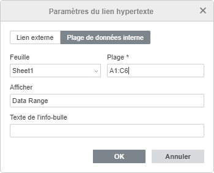

Ajouter des liens
Pour ajouter un lien dans l'éditeur de classeurs:
- Sélectionnez l'élément que vous souhaitez afficher en tant que lien, ç-à-d une cellule, une image ou un groupe d'objets.
- Passez à l'onglet Insertion de la barre d'outils supérieure.
- Cliquez surl'icône Lien de la barre d'outils supérieure.
-
La fenêtre Paramètres du lien s'affiche ensuite et vous pouvez paramétrer le lien:
-
Sélectionnez le type de lien que vous voulez ajouter:
Utilisez l'option Lien externe et saisissez l'URL au format
http://www.example.comdans le Lien vers champ ci-dessous si vous souhaitez ajouter un lien menant vers un site externe. S'il vous faut ajouter un lien vers un fichier local, saisissez l'URL au formatfile://path/Spreadsheet.xlsx(sous Windows) oufile:///path/Spreadsheet.xlsx(sous macOS et Linux) dans le champ Lien vers.Il est possible d'ouvrir le lien au format
file://path/Spreadsheet.xlsxoufile:///path/Spreadsheet.xlsxuniquement dans l'éditeur de bureau. Dans l'éditeur web, vous ne pouvez qu'ajouter le lien sans pouvoir l'ouvrir.
Utilisez l'option Plage de données interne et sélectionnez une feuille et une plage dans les champs ci-dessous, ou une Plage nommée existante si vous avez besoin d'ajouter un lien menant à une plage de cellules dans le même classeur.
Il est également possible de générer un lien externe vers une cellule ou une plage de cellules en cliquant sur le bouton Obtenir un lien ou en utilisant l'option Obtenir le lien vers cette plage dans le menu contextuel de la plage de cellules nécessaire. L'option Obtenir le lien vers cette plage est également disponible en mode d'affichage.

-
Afficher - saisissez le texte qui devient automatiquement cliquable renvoyant vers l'adresse spécifiée ci-dessus.
Si la cellule sélectionnée contient déjà des données, elles seront automatiquement affichées dans ce champ.
- Texte de l'info-bulle - entrez un texte qui sera visible dans une petite fenêtre contextuelle offrant une courte note ou étiquette lorsque vous placez le curseur sur un lien.
-
Sélectionnez le type de lien que vous voulez ajouter:
- Cliquez sur OK.
Pour ajouter un lien hypertexte, vous pouvez également utiliser la combinaison des touches Ctrl+K ou cliquer avec le bouton droit à l'emplacement choisi et sélectionner l'option Lien du menu contextuel.
Lorsque vous placez le curseur sur le lien ajouté, l'info-bulle s'affiche. Pour suivre le lien, cliquez sur le lien dans votre feuille de calcul. Pour sélectionner une cellule qui contient un lien sans ouvrir le lien, cliquez et maintenez le bouton de la souris enfoncé.
Pour supprimer le lien ajouté, activez la cellule contenant le lien et appuyez sur la touche Supprimer ou cliquez avec le bouton droit sur la cellule et sélectionnez l'option Effacer tout dans la liste déroulante.